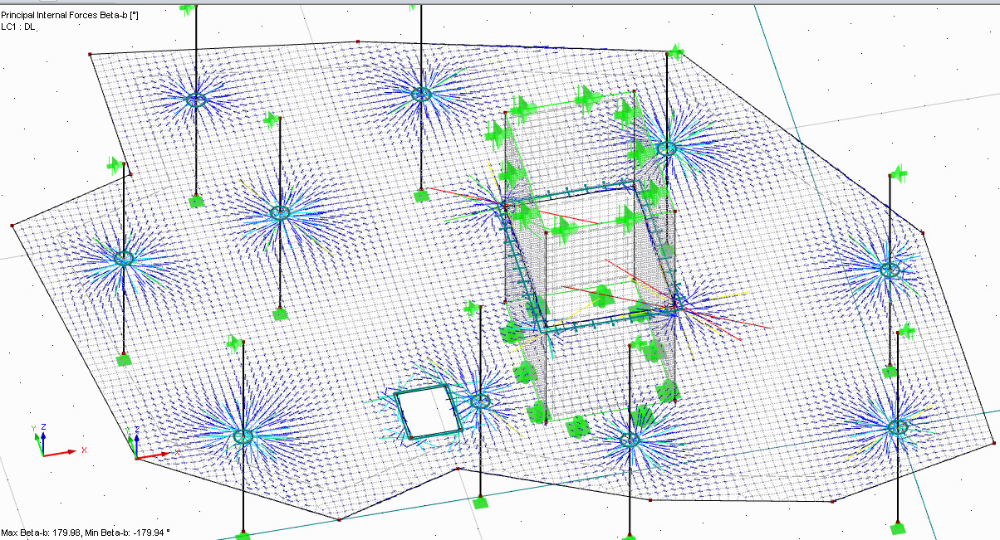
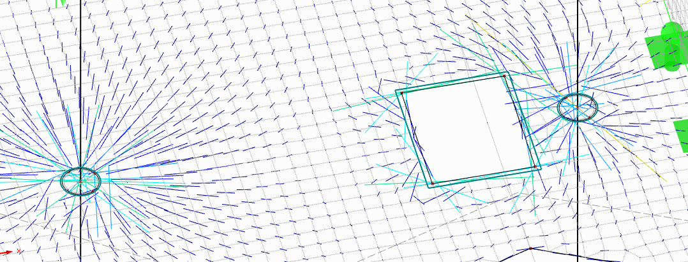
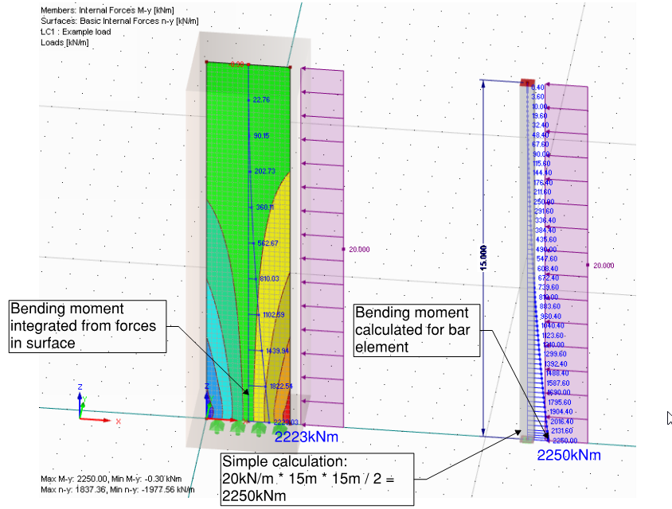
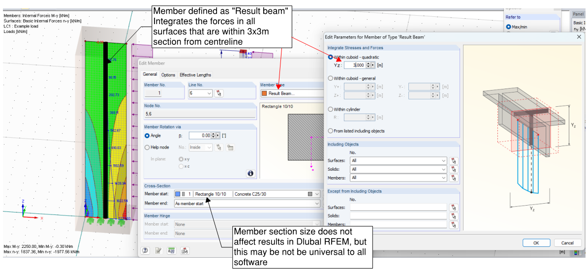

Results #
Results verification #
Calculation finished! You got the results! But can you trust the results?
The basic widely suggested check is to see whether sum of loads in the model is the same as sum of calculated reactions. To be honest, within past 10 years I have never seen a model where this is not satisfied. However, I have seen lot of models where something has gone wrong. Such a primitive check tells you very little about the model behaviour.
Steps I suggest for gaining confidence about model results:
-
Start with deflection checks at self-weight cause. Does it deflect as expected? If not – there is no point of doing any other checks.
- Re-check boundary conditions if needed.
- Re-check hinges at bar ends.
- Re-check whether there might be duplicate nodes.
- Go back to “Dealing with instabilities” section;
-
Then check deflection for other load cases. Have a look at maximum deflection. Also, look at rotations. Are there areas where displacements/rotations are significantly larger than elsewhere? What does cause those? Sometimes such locations arise when model is theoretically stable, but relies on member torsional stiffness – something that you would rarely want to rely in a real structure;
-
If there is a load case with relatively uniform load applied on horizontal members (e.g. SDL on floor), check whether the deflections are also relatively uniform (assuming the floor stiffness does not vary significantly).
-
Support reactions:
- Check if there are any “torsion” bending moments delivered to supports. Did you intend to have those?
- Are there significant reactions acting opposite each other? i.e. is the sum of absolute values of reactions significantly different than sum of reactions considering signs of numbers? Sometimes there are unwanted moment frame effects.
-
Members:
- Bending moment about main axis – is there any location where unwanted continuity effects arise?
- Torsion in members – in most steel/timber structures you would want the torsion to effectively be zero or close to zero.
-
For overall building models, manual load takedown is always a good idea. The sum of reactions should correspond to loads calculated in manual load takedown.
- Remember that if you have continuous floors, then manual load takedown will be only useful to check sums of reactions.
- Another good check is to see sum of Equivalent horizontal forces and check whether they correspond to the set portion (e.g. 1/400) of sum of vertical loads?
- What about wind loads? Does sum of wind load reactions in particular direction is the same as manually calculated using pressure + suction?
-
If your model has any non-linear features, check if these are working as expected:
- Check whether tension bracing gets engaged in the load cases with wind in respective directions;
- Check whether compression only supports allow movement when tension is introduced. For surface bearing supports check the stress at support. It may be that stress is unreasonably high, meaning that spring stiffness could be too stiff there.
- If non-linear material is used, check the extent of area that acts non-linearly.
Stresses in surfaces #
The purpose of this section is not to reiterate about forces/stresses available for every shell element. There are good references in documentation of software:
My intention is to focus on points that are easy to miss or are frequently used in design:
- Note that in Autodesk Robot and Dlubal RFEM there is difference between notation of results axis for bar (1D) and shell (2d) elements.
- For bar (1D), My is moment about y axis.
- For shell (2D), my is moment in y axis direction (about x axis)
- When looking at stresses of surfaces, remember that there are at
least three layers to view the results – top layer, middle and
bottom layer.
For example, Autodesk Robot “by default” shows stresses in middle layer – stresses caused by bending won’t be there. - For checking whether the behaviour of surface elements is as
expected, additional to bending moments, a direction of principal
shear forces can be viewed.
Assessing load paths using principal shear force directions


- Remember that the static analysis results do not account for any buckling effects. If you see a considerable compression stress, it is up to you do judge whether buckling may be an issue within parts that are in compression.
For design of concrete slabs or walls, it is required to account for
twisting moments and in-plane shear. Wood & Armer method is the most
popular way to do it.
If you wish to design reinforcement based on FE results, you must use
these “adjusted” internal forces. In Dlubal RFEM these are called “design
forces”, in Autodesk Robot you can view these in “Maps >> Complex”.
The general idea is very simple – the absolute value of “design force”
is sum of absolute value of n.x or n.y plus absolute value of shear
force n.xy. The same process/idea is applied to moments m.x and m.y
and twisting moment m.xy.
For design of steel plates, A simple approach is to use Von Mises equivalent stress that accounts for normal and shear stress in all directions. Compare this stress with yield stress. Note that Von Mises stress criteria is also typically used (one of the options) for calculations with non-linear material and assessing whether the stress are above yield stress and material properties should be updated.
Result beams/sections #
In Dlubal RFEM these are called “result beams”, in Autodesk Robot these are called “Panel cuts”. In ETABS these are called “Piers” or “Spandrels”. However, the idea of all these features are the same – to integrate results of surfaces and output these as results of linear beam.
These are very helpful features for designing concrete walls (theoretically, these work on any surface, including steel). They are also very helpful to assessing buckling effects in surfaces via equations in building codes – because those equations are written for assessment of columns, not continuous surfaces.
Result beams are also useful if you need to communicate forces that are transferred via walls – set of member forces are much easier to communicate than varying linear loads.
Example of using Dlubal RFEM “Result beam” for shear wall assessment

